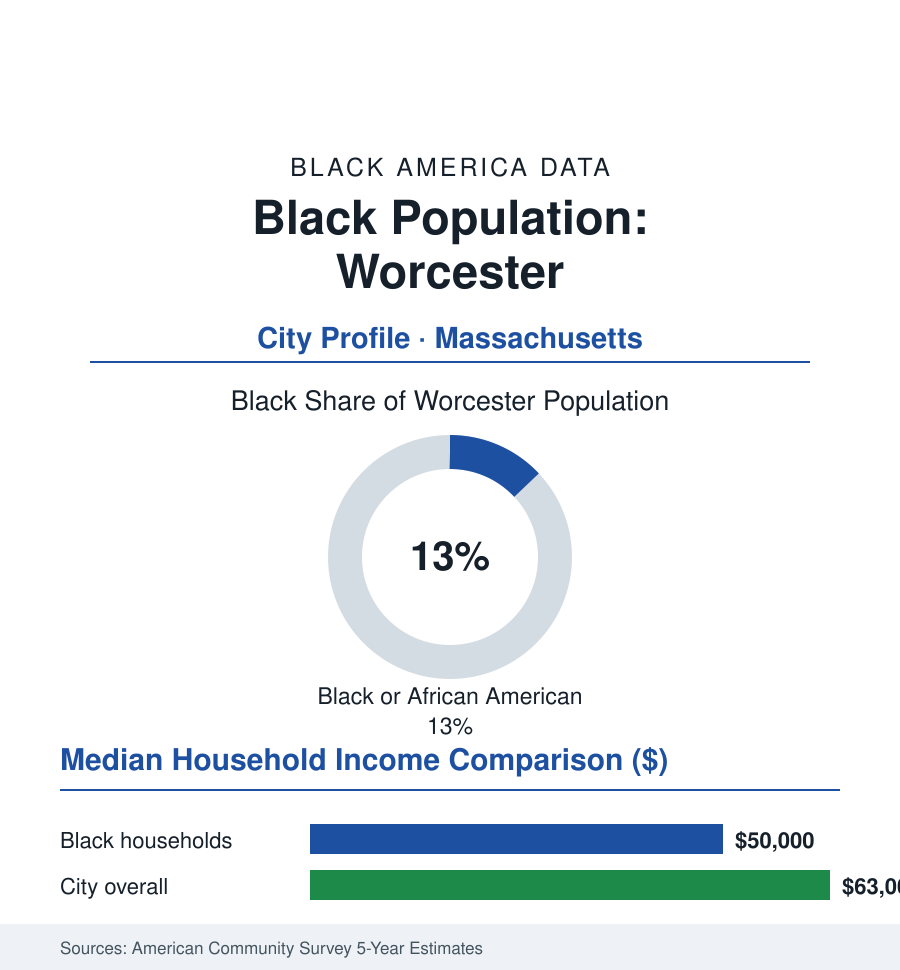

Black Cities
Black Worcester: 27,000 People in the Heart of the Commonwealth
Worcester's Black community, about 27,000 strong and 13% of the city, grew with the wire mills and anchors today's eds-and-meds economy. The census portrait.

Worcester's Black community numbers approximately 27,000 people — about 13% of the city's 206,000 residents — the second-largest city in New England holding one of its larger Black populations. Worcester's Black history is older than its industry (the city hosted one of the nation's first Black newspapers' readerships and a freedom-era community of note) and its present is defined by the eds-and-meds economy that replaced the wire mills: a community anchored around the Great Brook Valley and Main South neighborhoods, served by a dense college map, and increasingly joined by one of the nation's notable African immigrant communities. This profile reads the Heart of the Commonwealth's file.
Wire Mills, Washburn, and the Great Brook Valley
The community's growth followed Worcester's industrial century: the Washburn & Moen wire works (barbed wire's capital), the Norton abrasives giant, the loom and machinery shops — employers drawing Black Southerners and, distinctively for New England, Black Nova Scotian and Caribbean migrants in the earlier waves. The settlement geography organized around the east and south — the neighborhoods that became Great Brook Valley (built as public housing in the 1950s, among the state's largest developments, and for generations a center of Black Worcester life, its resident associations and its churches the neighborhood's government) and Main South's corridor. The post-industrial transition came with the mills' late-century closures, and the city's reinvention — the biotech park anchored by UMass Chan Medical School, the hospital systems' consolidation, the downtown's college-driven revival — re-based the Black workforce onto the eds-and-meds tiers (UMass Memorial's thousands of jobs, the colleges' staffs, the public schools and city services) and the logistics of the I-290/I-495 crossroads.
The African City Within the City
Worcester's distinctive demographic chapter is its African immigration: the city holds one of the largest Ghanaian communities in the United States (the foreign-born data count thousands of Ghanaian-born residents — the churches, markets, and associations of a community visible across the city's east side) alongside Liberian, Kenyan, and other African communities of scale, drawn by the eds-and-meds jobs, the housing costs below Boston's, and chain migration's compounding. The dual Black Worcester — the multigenerational African American community of Great Brook Valley and the African immigrant communities — shares neighborhoods, churches in some cases and not others, and the school system's classrooms, and its institutional life (the African cultural festivals, the immigrant service organizations, the Black professional associations spanning both) is the current era's defining civic construction. The school data show the meeting plainly: Worcester Public Schools enroll a student body about a fifth Black, its dual-language and newcomer programs serving the city's full diversity, its exam and magnet tiers (the University Park Campus School's model) part of the community's education story.
Colleges, Politics, and the Ledger
No city in this section is more college-dense: Clark University (whose urban-engagement model is a national case study), Worcester Polytechnic Institute, the College of the Holy Cross, UMass Chan, Worcester State, Quinsigamond Community College (the workforce engine, its student body the city's mirror), and more — a dozen institutions whose combined Black enrollment and employment make higher education the community's largest single industry. The political file: Black representation on the city council and school committee in the modern record, the community's delegates in the state house, and the mayoral and manager-era politics of a city whose Black constituency is courted as the swing it arithmetically is. The ACS ledger: Black median household income around fifty thousand dollars against a city median in the low sixty-thousands; homeownership in the mid-forty percent range on the triple-decker and single-family stock of the east and south sides (Worcester's housing costs — the metro's relative affordability — making its ownership rate among New England's more attainable in the data); poverty elevated in the familiar pattern, its concentration in the Great Brook Valley and Main South tracts the map the city's equity reports publish.
Reading Worcester's Numbers
Thirteen percent of New England's second city, a wire-mill vintage and an African-immigrant present in the same neighborhoods: Worcester is the atlas's portrait of the Black community in transition between its two modern formations — the descendants of the Great Migration and the new arrivals from Accra sharing a school system, a hospital workforce, and a future the census will keep braiding together. The next count is already enrolled in its kindergartens.
More in Black Cities
Black Atlanta: Population, Distribution, and Growth of a Black Metropolis
Metro Atlanta holds more than two million Black residents — roughly one in three, second only to New York. The suburban distribution, migration history, and composition of Black Atlanta in the census data.
Black New York: The Largest Black Population in America
The New York metropolitan area holds about 3.4 million Black residents — more than any metro in the nation — and the city itself about two million. The census profile.
Black Washington: The District and the Metro
The Washington metro holds about 1.6 million Black residents, and the District itself — long a majority-Black city — now records a Black share near 41 percent. The census profile.
Source: U.S. Census Bureau, 2020 Census and American Community Survey 5-year estimates; City of Worcester; Worcester Historical Museum archives.